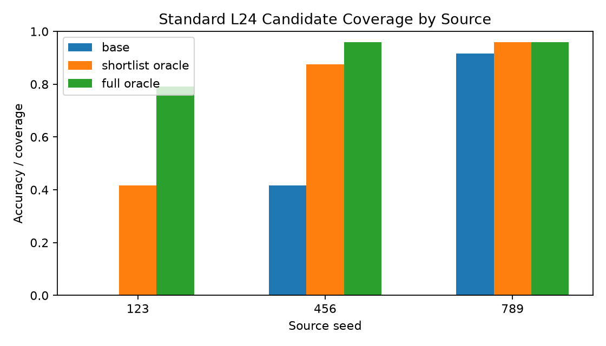
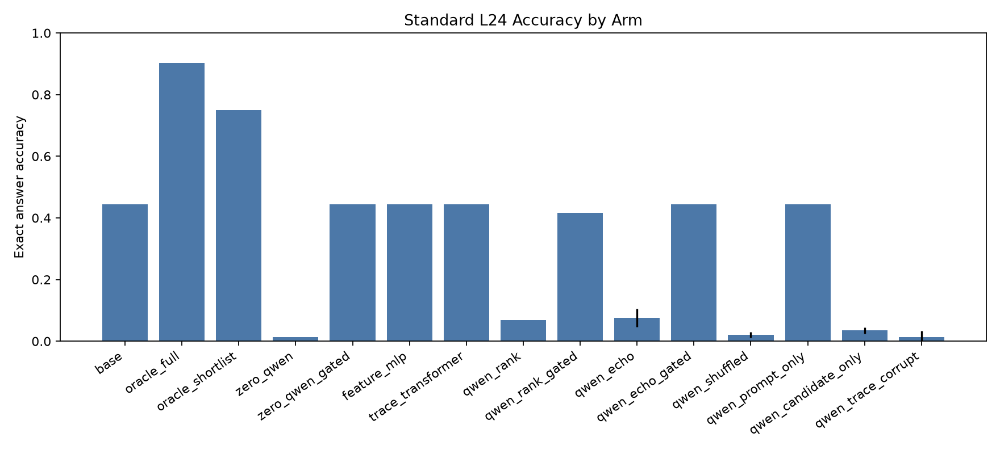
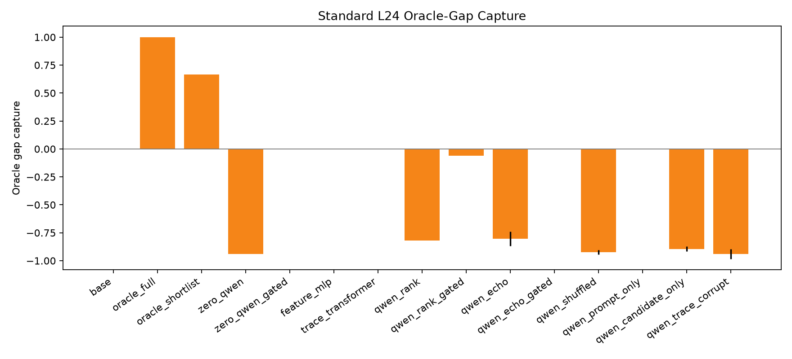
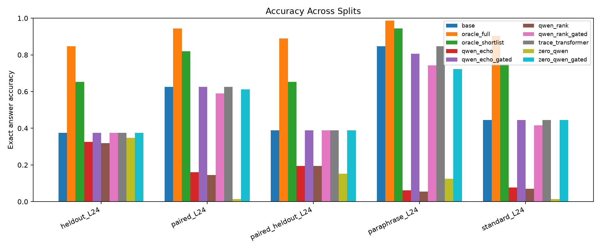

This standalone experiment tests whether a Qwen reader can score concrete executable repair candidates. Each candidate contains a program and execution trace. Learned selectors are trained only from offline labels; at inference they do not receive the target answer or target state.
On standard_L24, no non-oracle selector improved over the no-repair base policy: base was 44.4%, the best tied selector accuracy was 44.4% (feature_mlp, qwen_echo_gated, trace_transformer, zero_qwen_gated), deployable-shortlist oracle accuracy was 75.0%, and full-pool oracle accuracy was 90.3%.
Ungated candidate-conditioned Qwen selectors usually over-edited and damaged correct base programs; validation-gated variants avoided most damage by falling back to the base candidate, but did not recover the reachable repair gap.
• Base reader: `Qwen/Qwen3-4B`.
• Candidate shortlist size: `64`.
• Held-out source seed: `789`.
• Train groups per non-held-out source: `32`; validation groups per non-held-out source: `12`; eval groups per source/split: `24`.
Selectors:
• `base`: no repair.
• `oracle_full`: best answer-correct candidate in the full candidate pool.
• `oracle_shortlist`: best answer-correct candidate in the deployable shortlist.
• `zero_qwen`: frozen Qwen yes/no score with no training.
• `zero_qwen_gated`: frozen Qwen score with validation-tuned base fallback.
• `feature_mlp`: feature-only learned baseline.
• `trace_transformer`: small trace-only learned baseline.
• `qwen_rank`: Qwen embedding plus groupwise ranking head.
• `qwen_rank_gated`: Qwen ranking head with validation-tuned base fallback.
• `qwen_echo`: same ranking head with auxiliary candidate trace prediction.
• `qwen_echo_gated`: ECHO-ablation head with validation-tuned base fallback.
• Control arms: shuffled labels, prompt-only, candidate-only, and trace-corrupted candidate reading.
| split | groups | avg_full_candidates | avg_shortlist | base_accuracy | shortlist_oracle_accuracy | full_oracle_accuracy | shortlist_oracle_capture |
|---|---|---|---|---|---|---|---|
| heldout_L24 | 72 | 177 | 64 | 37.5% | 65.3% | 84.7% | 77.0% |
| paired_L24 | 72 | 177 | 64 | 62.5% | 81.9% | 94.4% | 86.8% |
| paired_heldout_L24 | 72 | 177 | 64 | 38.9% | 65.3% | 88.9% | 73.4% |
| paraphrase_L24 | 72 | 177 | 64 | 84.7% | 94.4% | 98.6% | 95.8% |
| standard_L24 | 72 | 177 | 64 | 44.4% | 75.0% | 90.3% | 83.1% |
| train_mixed_L24 | 64 | 177 | 64 | 81.2% | 96.9% | 100.0% | 96.9% |
| val_mixed_L24 | 24 | 177 | 64 | 75.0% | 83.3% | 91.7% | 90.9% |

| arm | mean_accuracy | mean_gap_capture | mean_changed | mean_damage | mean_recovery |
|---|---|---|---|---|---|
| base | 44.4% | 0.0% | 0 | 0 | 0 |
| feature_mlp | 44.4% | 0.0% | 0 | 0 | 0 |
| oracle_full | 90.3% | 100.0% | 0.458 | 0 | 0.825 |
| oracle_shortlist | 75.0% | 66.7% | 0.306 | 0 | 0.55 |
| qwen_candidate_only | 3.5% | -89.4% | 0.993 | 0.922 | 0 |
| qwen_echo | 7.6% | -80.3% | 0.924 | 0.859 | 0.025 |
| qwen_echo_gated | 44.4% | 0.0% | 0.035 | 0 | 0 |
| qwen_prompt_only | 44.4% | 0.0% | 0 | 0 | 0 |
| qwen_rank | 6.9% | -81.8% | 0.924 | 0.875 | 0.025 |
| qwen_rank_gated | 41.7% | -6.1% | 0.104 | 0.062 | 0 |
| qwen_shuffled | 2.1% | -92.4% | 0.979 | 0.969 | 0.013 |
| qwen_trace_corrupt | 1.4% | -93.9% | 0.979 | 0.984 | 0.013 |
| trace_transformer | 44.4% | 0.0% | 0 | 0 | 0 |
| zero_qwen | 1.4% | -93.9% | 0.972 | 0.969 | 0 |
| zero_qwen_gated | 44.4% | 0.0% | 0 | 0 | 0 |


| split | arm | seed | accuracy | gap_capture | changed_fraction | damage_rate | recovery_rate |
|---|---|---|---|---|---|---|---|
| heldout_L24 | base | -1 | 37.5% | 0.0% | 0.0% | 0.0% | 0.0% |
| paired_L24 | base | -1 | 62.5% | 0.0% | 0.0% | 0.0% | 0.0% |
| paired_heldout_L24 | base | -1 | 38.9% | 0.0% | 0.0% | 0.0% | 0.0% |
| paraphrase_L24 | base | -1 | 84.7% | 0.0% | 0.0% | 0.0% | 0.0% |
| standard_L24 | base | -1 | 44.4% | 0.0% | 0.0% | 0.0% | 0.0% |
| heldout_L24 | oracle_full | -1 | 84.7% | 100.0% | 47.2% | 0.0% | 75.6% |
| paired_L24 | oracle_full | -1 | 94.4% | 100.0% | 31.9% | 0.0% | 85.2% |
| paired_heldout_L24 | oracle_full | -1 | 88.9% | 100.0% | 50.0% | 0.0% | 81.8% |
| paraphrase_L24 | oracle_full | -1 | 98.6% | 100.0% | 13.9% | 0.0% | 90.9% |
| standard_L24 | oracle_full | -1 | 90.3% | 100.0% | 45.8% | 0.0% | 82.5% |
| heldout_L24 | oracle_shortlist | -1 | 65.3% | 58.8% | 27.8% | 0.0% | 44.4% |
| paired_L24 | oracle_shortlist | -1 | 81.9% | 60.9% | 19.4% | 0.0% | 51.9% |
| paired_heldout_L24 | oracle_shortlist | -1 | 65.3% | 52.8% | 26.4% | 0.0% | 43.2% |
| paraphrase_L24 | oracle_shortlist | -1 | 94.4% | 70.0% | 9.7% | 0.0% | 63.6% |
| standard_L24 | oracle_shortlist | -1 | 75.0% | 66.7% | 30.6% | 0.0% | 55.0% |
| heldout_L24 | zero_qwen | -1 | 34.7% | -5.9% | 4.2% | 7.4% | 0.0% |
| paired_L24 | zero_qwen | -1 | 1.4% | -191.3% | 98.6% | 100.0% | 3.7% |
| paired_heldout_L24 | zero_qwen | -1 | 15.3% | -47.2% | 54.2% | 60.7% | 0.0% |
| paraphrase_L24 | zero_qwen | -1 | 12.5% | -520.0% | 87.5% | 85.2% | 0.0% |
| standard_L24 | zero_qwen | -1 | 1.4% | -93.9% | 97.2% | 96.9% | 0.0% |
| heldout_L24 | zero_qwen_gated | -1 | 37.5% | 0.0% | 0.0% | 0.0% | 0.0% |
| paired_L24 | zero_qwen_gated | -1 | 61.1% | -4.3% | 1.4% | 2.2% | 0.0% |
| paired_heldout_L24 | zero_qwen_gated | -1 | 38.9% | 0.0% | 0.0% | 0.0% | 0.0% |
| paraphrase_L24 | zero_qwen_gated | -1 | 72.2% | -90.0% | 12.5% | 14.8% | 0.0% |
| standard_L24 | zero_qwen_gated | -1 | 44.4% | 0.0% | 0.0% | 0.0% | 0.0% |
| heldout_L24 | feature_mlp | 101 | 37.5% | 0.0% | 0.0% | 0.0% | 0.0% |
| paired_L24 | feature_mlp | 101 | 62.5% | 0.0% | 0.0% | 0.0% | 0.0% |
| paired_heldout_L24 | feature_mlp | 101 | 38.9% | 0.0% | 0.0% | 0.0% | 0.0% |
| paraphrase_L24 | feature_mlp | 101 | 84.7% | 0.0% | 0.0% | 0.0% | 0.0% |
| standard_L24 | feature_mlp | 101 | 44.4% | 0.0% | 0.0% | 0.0% | 0.0% |
| heldout_L24 | trace_transformer | 101 | 37.5% | 0.0% | 0.0% | 0.0% | 0.0% |
| paired_L24 | trace_transformer | 101 | 62.5% | 0.0% | 0.0% | 0.0% | 0.0% |
| paired_heldout_L24 | trace_transformer | 101 | 38.9% | 0.0% | 0.0% | 0.0% | 0.0% |
| paraphrase_L24 | trace_transformer | 101 | 84.7% | 0.0% | 0.0% | 0.0% | 0.0% |
| standard_L24 | trace_transformer | 101 | 44.4% | 0.0% | 0.0% | 0.0% | 0.0% |
| heldout_L24 | qwen_rank | 101 | 31.9% | -11.8% | 13.9% | 14.8% | 0.0% |
| paired_L24 | qwen_rank | 101 | 16.7% | -143.5% | 86.1% | 77.8% | 7.4% |
| paired_heldout_L24 | qwen_rank | 101 | 19.4% | -38.9% | 61.1% | 57.1% | 4.5% |
| paraphrase_L24 | qwen_rank | 101 | 6.9% | -560.0% | 94.4% | 93.4% | 9.1% |
| standard_L24 | qwen_rank | 101 | 6.9% | -81.8% | 91.7% | 87.5% | 2.5% |
| heldout_L24 | qwen_rank_gated | 101 | 37.5% | 0.0% | 0.0% | 0.0% | 0.0% |
| paired_L24 | qwen_rank_gated | 101 | 59.7% | -8.7% | 9.7% | 6.7% | 3.7% |
| paired_heldout_L24 | qwen_rank_gated | 101 | 38.9% | 0.0% | 0.0% | 0.0% | 0.0% |
| paraphrase_L24 | qwen_rank_gated | 101 | 73.6% | -80.0% | 13.9% | 14.8% | 9.1% |
| standard_L24 | qwen_rank_gated | 101 | 41.7% | -6.1% | 9.7% | 6.2% | 0.0% |
| heldout_L24 | qwen_echo | 101 | 31.9% | -11.8% | 15.3% | 14.8% | 0.0% |
| paired_L24 | qwen_echo | 101 | 16.7% | -143.5% | 86.1% | 77.8% | 7.4% |
| paired_heldout_L24 | qwen_echo | 101 | 22.2% | -33.3% | 56.9% | 50.0% | 4.5% |
| paraphrase_L24 | qwen_echo | 101 | 5.6% | -570.0% | 94.4% | 93.4% | 0.0% |
| standard_L24 | qwen_echo | 101 | 9.7% | -75.8% | 90.3% | 81.2% | 2.5% |
| heldout_L24 | qwen_echo_gated | 101 | 37.5% | 0.0% | 0.0% | 0.0% | 0.0% |
| paired_L24 | qwen_echo_gated | 101 | 62.5% | 0.0% | 1.4% | 0.0% | 0.0% |
| paired_heldout_L24 | qwen_echo_gated | 101 | 38.9% | 0.0% | 0.0% | 0.0% | 0.0% |
| paraphrase_L24 | qwen_echo_gated | 101 | 80.6% | -30.0% | 4.2% | 4.9% | 0.0% |
| standard_L24 | qwen_echo_gated | 101 | 44.4% | 0.0% | 6.9% | 0.0% | 0.0% |
| heldout_L24 | feature_mlp | 202 | 37.5% | 0.0% | 0.0% | 0.0% | 0.0% |
| paired_L24 | feature_mlp | 202 | 62.5% | 0.0% | 0.0% | 0.0% | 0.0% |
| paired_heldout_L24 | feature_mlp | 202 | 38.9% | 0.0% | 0.0% | 0.0% | 0.0% |
| paraphrase_L24 | feature_mlp | 202 | 84.7% | 0.0% | 0.0% | 0.0% | 0.0% |
| standard_L24 | feature_mlp | 202 | 44.4% | 0.0% | 0.0% | 0.0% | 0.0% |
| heldout_L24 | trace_transformer | 202 | 37.5% | 0.0% | 0.0% | 0.0% | 0.0% |
| paired_L24 | trace_transformer | 202 | 62.5% | 0.0% | 0.0% | 0.0% | 0.0% |
| paired_heldout_L24 | trace_transformer | 202 | 38.9% | 0.0% | 0.0% | 0.0% | 0.0% |
| paraphrase_L24 | trace_transformer | 202 | 84.7% | 0.0% | 0.0% | 0.0% | 0.0% |
| standard_L24 | trace_transformer | 202 | 44.4% | 0.0% | 0.0% | 0.0% | 0.0% |
| heldout_L24 | qwen_rank | 202 | 31.9% | -11.8% | 15.3% | 14.8% | 0.0% |
| paired_L24 | qwen_rank | 202 | 12.5% | -156.5% | 88.9% | 84.4% | 7.4% |
| paired_heldout_L24 | qwen_rank | 202 | 19.4% | -38.9% | 61.1% | 53.6% | 2.3% |
| paraphrase_L24 | qwen_rank | 202 | 4.2% | -580.0% | 95.8% | 95.1% | 0.0% |
| standard_L24 | qwen_rank | 202 | 6.9% | -81.8% | 93.1% | 87.5% | 2.5% |
| heldout_L24 | qwen_rank_gated | 202 | 37.5% | 0.0% | 0.0% | 0.0% | 0.0% |
| paired_L24 | qwen_rank_gated | 202 | 58.3% | -13.0% | 9.7% | 6.7% | 0.0% |
| paired_heldout_L24 | qwen_rank_gated | 202 | 38.9% | 0.0% | 1.4% | 0.0% | 0.0% |
| paraphrase_L24 | qwen_rank_gated | 202 | 75.0% | -70.0% | 13.9% | 11.5% | 0.0% |
| standard_L24 | qwen_rank_gated | 202 | 41.7% | -6.1% | 11.1% | 6.2% | 0.0% |
| heldout_L24 | qwen_echo | 202 | 33.3% | -8.8% | 11.1% | 11.1% | 0.0% |
| paired_L24 | qwen_echo | 202 | 15.3% | -147.8% | 87.5% | 80.0% | 7.4% |
| paired_heldout_L24 | qwen_echo | 202 | 16.7% | -44.4% | 62.5% | 60.7% | 2.3% |
| paraphrase_L24 | qwen_echo | 202 | 6.9% | -560.0% | 93.1% | 91.8% | 0.0% |
| standard_L24 | qwen_echo | 202 | 5.6% | -84.8% | 94.4% | 90.6% | 2.5% |

| arm | seed | accuracy | base_accuracy | oracle_accuracy | gap_capture | changed_fraction | damage_rate | recovery_rate |
|---|---|---|---|---|---|---|---|---|
| base | -1 | 91.7% | 91.7% | 95.8% | 0.0% | 0.0% | 0.0% | 0.0% |
| oracle_full | -1 | 95.8% | 91.7% | 95.8% | 100.0% | 4.2% | 0.0% | 50.0% |
| oracle_shortlist | -1 | 95.8% | 91.7% | 95.8% | 100.0% | 4.2% | 0.0% | 50.0% |
| zero_qwen | -1 | 0.0% | 91.7% | 95.8% | -2200.0% | 100.0% | 100.0% | 0.0% |
| zero_qwen_gated | -1 | 91.7% | 91.7% | 95.8% | 0.0% | 0.0% | 0.0% | 0.0% |
| feature_mlp | 101 | 91.7% | 91.7% | 95.8% | 0.0% | 0.0% | 0.0% | 0.0% |
| trace_transformer | 101 | 91.7% | 91.7% | 95.8% | 0.0% | 0.0% | 0.0% | 0.0% |
| qwen_rank | 101 | 8.3% | 91.7% | 95.8% | -2000.0% | 91.7% | 90.9% | 0.0% |
| qwen_rank_gated | 101 | 87.5% | 91.7% | 95.8% | -100.0% | 4.2% | 4.5% | 0.0% |
| qwen_echo | 101 | 12.5% | 91.7% | 95.8% | -1900.0% | 87.5% | 86.4% | 0.0% |
| qwen_echo_gated | 101 | 91.7% | 91.7% | 95.8% | 0.0% | 0.0% | 0.0% | 0.0% |
| qwen_shuffled | 101 | 4.2% | 91.7% | 95.8% | -2100.0% | 95.8% | 95.5% | 0.0% |
| qwen_prompt_only | 101 | 91.7% | 91.7% | 95.8% | 0.0% | 0.0% | 0.0% | 0.0% |
| qwen_candidate_only | 101 | 4.2% | 91.7% | 95.8% | -2100.0% | 100.0% | 95.5% | 0.0% |
| qwen_trace_corrupt | 101 | 4.2% | 91.7% | 95.8% | -2100.0% | 100.0% | 95.5% | 0.0% |
| feature_mlp | 202 | 91.7% | 91.7% | 95.8% | 0.0% | 0.0% | 0.0% | 0.0% |
| trace_transformer | 202 | 91.7% | 91.7% | 95.8% | 0.0% | 0.0% | 0.0% | 0.0% |
| qwen_rank | 202 | 8.3% | 91.7% | 95.8% | -2000.0% | 91.7% | 90.9% | 0.0% |
| qwen_rank_gated | 202 | 87.5% | 91.7% | 95.8% | -100.0% | 4.2% | 4.5% | 0.0% |
| qwen_echo | 202 | 8.3% | 91.7% | 95.8% | -2000.0% | 91.7% | 90.9% | 0.0% |
| qwen_echo_gated | 202 | 91.7% | 91.7% | 95.8% | 0.0% | 0.0% | 0.0% | 0.0% |
| qwen_shuffled | 202 | 4.2% | 91.7% | 95.8% | -2100.0% | 95.8% | 95.5% | 0.0% |
| qwen_prompt_only | 202 | 91.7% | 91.7% | 95.8% | 0.0% | 0.0% | 0.0% | 0.0% |
| qwen_candidate_only | 202 | 8.3% | 91.7% | 95.8% | -2000.0% | 100.0% | 90.9% | 0.0% |
| qwen_trace_corrupt | 202 | 0.0% | 91.7% | 95.8% | -2200.0% | 100.0% | 100.0% | 0.0% |
| arm | seed | epoch | train_loss | val_accuracy | val_damage_rate | val_recovery_rate | val_utility |
|---|---|---|---|---|---|---|---|
| qwen_trace_corrupt | 101 | 8 | 3.935 | 0.0% | 100.0% | 0.0% | -0.75 |
| qwen_candidate_only | 101 | 8 | 3.559 | 4.2% | 94.4% | 0.0% | -0.667 |
| qwen_shuffled | 101 | 8 | 3.833 | 4.2% | 94.4% | 0.0% | -0.667 |
| qwen_prompt_only | 101 | 8 | 3.728 | 75.0% | 0.0% | 0.0% | 0.75 |
| trace_transformer | 101 | 8 | 1.435 | 75.0% | 0.0% | 0.0% | 0.75 |
| feature_mlp | 101 | 8 | 0.062 | 75.0% | 0.0% | 0.0% | 0.75 |
| qwen_rank | 101 | 8 | 3.273 | 12.5% | 88.9% | 16.7% | -0.5 |
| qwen_echo | 101 | 8 | 4.684 | 12.5% | 88.9% | 16.7% | -0.5 |
| qwen_echo | 202 | 8 | 4.633 | 8.3% | 88.9% | 0.0% | -0.583 |
| qwen_rank | 202 | 8 | 3.295 | 8.3% | 88.9% | 0.0% | -0.583 |
| feature_mlp | 202 | 8 | 0.067 | 75.0% | 0.0% | 0.0% | 0.75 |
| trace_transformer | 202 | 8 | 1.372 | 75.0% | 0.0% | 0.0% | 0.75 |
| qwen_prompt_only | 202 | 8 | 3.679 | 75.0% | 0.0% | 0.0% | 0.75 |
| qwen_shuffled | 202 | 8 | 3.673 | 0.0% | 100.0% | 0.0% | -0.75 |
| qwen_candidate_only | 202 | 8 | 3.714 | 0.0% | 100.0% | 0.0% | -0.75 |
| qwen_trace_corrupt | 202 | 8 | 3.562 | 0.0% | 100.0% | 0.0% | -0.75 |
The decisive measurement is not raw accuracy alone. The report separates candidate coverage from selector capture, because a selector cannot choose a correct program that is absent from its candidate shortlist. A useful selector should capture a stable fraction of the available oracle gap, make nontrivial repairs, and avoid damaging already-correct base programs.
• Run directory: `/workspace/experiments/qwen_candidate_conditioned_trace_verifier/runs/main_candidate_conditioned_qwen_trace_verifier_v2`
• Large embeddings: `/workspace/large_artifacts/qwen_candidate_conditioned_trace_verifier/embeddings/main_candidate_conditioned_qwen_trace_verifier_v1`
• Large checkpoints: `/workspace/large_artifacts/qwen_candidate_conditioned_trace_verifier/checkpoints/main_candidate_conditioned_qwen_trace_verifier_v2`
• Metrics CSV: `/workspace/experiments/qwen_candidate_conditioned_trace_verifier/reports/metrics.csv`
• Candidate summary CSV: `/workspace/experiments/qwen_candidate_conditioned_trace_verifier/reports/candidate_summary.csv`